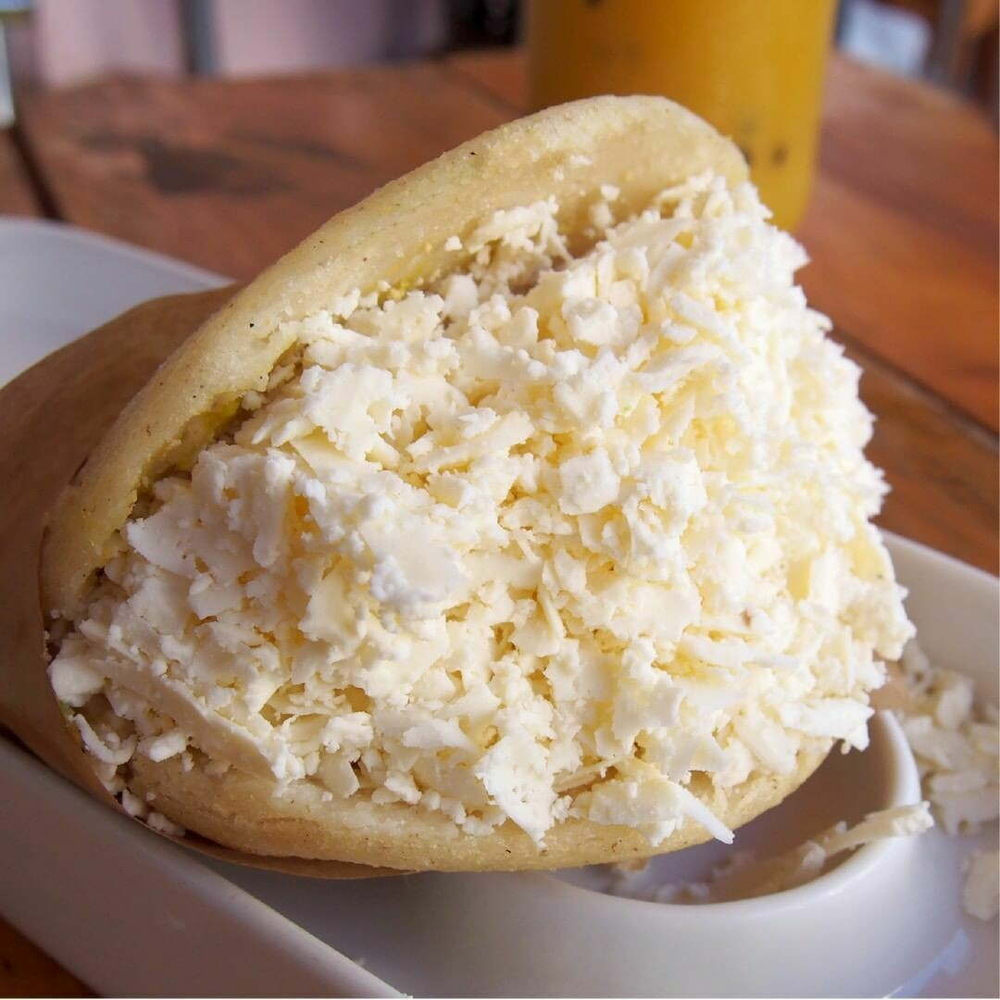

La arepa es uno de los platos más característicos de Venezuela, la arepa es un alimento que existía mucho antes de la llegada de los conquistadores españoles a América y junto a la yuca, para hacer el cazabe, formaban parte de la dieta básica de los indígenas. Las arepas se parecen a las pupusas y gorditas de América Central
HISTORIA DE LA APERA Según varios historiadores y datos arqueológicos, el origen de la arepa se inicia hace unos 3.000 años en los territorios indígenas que compartían Colombia y Venezuela en la antigüedad. La preparación de la arepa fue el resultado de la producción del maíz, alimento esencial de los pueblos indígenas en el continente americano. En el territorio actual de Venezuela, las tribus cultivaban varios tipos de maíz, el blanco, para asar, blanco y negro, maíz largo, color ceniza y el llamado por los españoles maíz cariaco, mientras que los cumanagotos lo llamaban erepa, lo que pudo dar origen al nombre de arepa.
En 1548, el contador del rey en Venezuela, Pedro Ruiz de Tapia, señalaba que las arepas de maíz era la comida de los indios para el almuerzo y la cena. En 1554, el conquistador español, cronista e historiador del mundo andino, Pedro Cieza de León, en su obra Crónica del Perú, cuya segunda parte, El señorío de los Incas, publicada en 1871, registra el consumo de la arepa en la provincia de Cartagena. En 1626, el franciscano español, profesor y cronista, Pedro Simón, en sus Noticias historiales de las conquistas de Tierra Firme en las Indias Occidentales de 1626, registra el consumo de arepas en la actual Venezuela.
Dato: En Colombia hay registros de la existencia del maíz de hace unos 3.000 años, mientras que en Venezuela, es de unos 2.800 años. Pero, esto no puede asegurar que el origen de la arepa sea colombiano, ya que la arepa como se conoce en la actualidad pudo originarse años después. Lo que sí es seguro, es que el origen de la arepa es indígena.
Video de Demostracion
Para el relleno de Pollo: 400 gramos de pechugas de pollo 2 dientes de ajo 1 cebolla 1 aguacate 3 cucharadas de mayonesa 25 mililitros de aceite de oliva virgen extra sal pimienta negra
Arepas venezolanas rellenas de pollo, un plato que se elabora a través de una masa casera que tiene como elemento principal la harina de maíz ¡tienes que probarlas